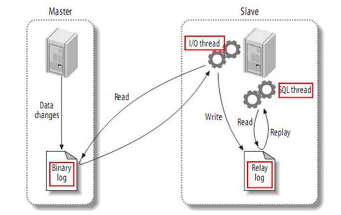

动手实践 观察现象 总结经验
MySQL BinLog¶
BinLog简介¶
二进制日志（Binlog）是 MySQL 服务端非常重要的一种日志，它会保存 MySQL 数据库的所有数据变更记录到日志文件中。
记录所有对数据库执行的 写操作（INSERT、UPDATE、DELETE、DDL 等），不记录 SELECT 和 SHOW 操作。
Binlog 的三大作用¶
| 作用 | 说明 |
|---|---|
| 主从复制 | Slave 节点重放 Binlog 实现数据同步 |
| 数据恢复 | 基于某个时间点或位置恢复数据 |
| 增量备份 | 结合全量备份实现增量备份策略 |
主从复制流程¶

- Master 主库将数据变更写入二进制日志（binary log）
- Slave 从库向 Master 发送 dump 协议，拷贝 binary log events 到中继日志（relay log）
- Slave 从库读取并回放中继日志，同步数据到自身库
BinLog格式¶
binlog_format
| 格式 | 记录内容 | 核心特点 |
|---|---|---|
| Row | 数据行变更 | 主从绝对一致，日志量大 |
| Statement | SQL 语句 | 日志量小，可能有一致性问题 |
| Mixed | 自动切换 | 折中方案，自动判断 |
假设某SQL操作语句，刚好命中 3 行。
ROW 模式¶
ROW模式不是记 SQL，是记 3 组行变化：
1. 第1行：
- 旧：id=1, age=24
- 新：id=1, age=25
2. 第2行：
- 旧：id=3, age=29
- 新：id=3, age=30
3. 第3行：
- 旧：id=7, age=27
- 新：id=7, age=28
STATEMENT模式¶
不管影响 1 行还是 10000 行，Statement都只存这一条字符串。
Mixed模式¶
Mixed = 混合模式：MySQL 自动在 STATEMENT 和 ROW 之间切换，取两者优点。
核心规则
- 安全语句（无不确定函数、无触发器/存储过程）
→ 用 STATEMENT，只记 SQL，日志小。 - 不安全语句（含
NOW()/RAND()/UUID()、存储过程、触发器、无 ORDER BY 的 LIMIT 等）
→ 自动切 ROW，按行记录，保证主从一致。
总结¶
- ROW：按行记，影响几行就几条变更，更安全、但日志更大
- STATEMENT：按语句记，一条 SQL 只存一次
- Mixed：自动选，安全 + 省空间
- MySQL 5.7/8.0 默认已是 ROW，Mixed 多为老版本兼容使用。
查询Binlog状态¶
mysql> show variables like '%log_bin%';
+---------------------------------+-------+
| Variable_name | Value |
+---------------------------------+-------+
| log_bin | OFF |
| log_bin_basename | |
| log_bin_index | |
| log_bin_trust_function_creators | OFF |
| log_bin_use_v1_row_events | OFF |
| sql_log_bin | ON |
+---------------------------------+-------+
6 rows in set (0.00 sec)
log_bin是总闸，控制整个功能是否开启sql_log_bin是分闸，只在总闸开启时才有意义
情况一：log_bin = OFF（总闸关闭）¶
flowchart TD
A[log_bin = OFF<br>全局总闸关闭] --> B[binlog 功能完全禁用]
B --> C[会话1: sql_log_bin=ON<br>❌ 不记录]
B --> D[会话2: sql_log_bin=OFF<br>❌ 不记录]
B --> E[会话N: sql_log_bin=ON<br>❌ 不记录]
C -.-> G[binlog 文件<br>空 / 无写入]
D -.-> G
E -.-> G
style A fill:#ff6b6b,stroke:#c92a2a,color:#fff
style B fill:#ff8787,stroke:#c92a2a
style C fill:#adb5bd,stroke:#495057
style D fill:#adb5bd,stroke:#495057
style E fill:#adb5bd,stroke:#495057
style G fill:#dee2e6,stroke:#495057情况二：log_bin = ON（总闸打开）¶
flowchart TD
A[log_bin = ON<br>全局总闸打开] --> B[binlog 功能已启用]
B --> C{会话1<br>sql_log_bin=ON}
C -->|✅ 记录| D[(binlog 文件)]
B --> E{会话3<br>sql_log_bin=OFF}
E -->|❌ 不记录| F[(丢弃)]
B --> G{会话2<br>sql_log_bin=ON}
G -->|✅ 记录| D
style A fill:#51cf66,stroke:#2f9e44,color:#fff
style B fill:#69db7e,stroke:#2f9e44
style C fill:#94d82d,stroke:#5c940d
style D fill:#e9ecef,stroke:#495057
style E fill:#ff8787,stroke:#c92a2a
style F fill:#adb5bd,stroke:#495057
style G fill:#94d82d,stroke:#5c940dBinLog操作实践¶
准备实验数据¶
CREATE DATABASE binlog_db
CHARACTER SET utf8mb4
COLLATE utf8mb4_unicode_ci;
use binlog_db;
DROP TABLE IF EXISTS `student`;
CREATE TABLE `student` (
`学号` int(255) NOT NULL AUTO_INCREMENT,
`姓名` varchar(255) DEFAULT NULL,
`性别` varchar(255) DEFAULT NULL,
`班级` varchar(255) DEFAULT NULL,
`年龄` varchar(255) DEFAULT NULL,
`成绩` varchar(255) DEFAULT NULL,
`身高` varchar(255) DEFAULT NULL,
`手机` varchar(255) DEFAULT NULL,
`插入时间` varchar(255) DEFAULT NULL,
`更新时间` varchar(255) DEFAULT NULL,
PRIMARY KEY (`学号`)
) ENGINE=InnoDB AUTO_INCREMENT=4 DEFAULT CHARSET=utf8 ROW_FORMAT=DYNAMIC;
-- ----------------------------
-- Records of student
-- ----------------------------
INSERT INTO `student` VALUES ('1', '张三', '男', '1701', '16', '78', '170', '18946554571', '2022-08-06', '2022-08-06');
INSERT INTO `student` VALUES ('2', '李四', '男', '1701', '17', '80', '175', '18946554572', '2022-08-06', '2022-08-06');
INSERT INTO `student` VALUES ('3', '王五', '男', '1702', '18', '95', '169', '18946554573', '2022-08-06', '2022-08-06');
查询创建结果。
mysql> select * from student;
+--------+--------+--------+--------+--------+--------+--------+-------------+--------------+--------------+
| 学号 | 姓名 | 性别 | 班级 | 年龄 | 成绩 | 身高 | 手机 | 插入时间 | 更新时间 |
+--------+--------+--------+--------+--------+--------+--------+-------------+--------------+--------------+
| 1 | 张三 | 男 | 1701 | 16 | 78 | 170 | 18946554571 | 2022-08-06 | 2022-08-06 |
| 2 | 李四 | 男 | 1701 | 17 | 80 | 175 | 18946554572 | 2022-08-06 | 2022-08-06 |
| 3 | 王五 | 男 | 1702 | 18 | 95 | 169 | 18946554573 | 2022-08-06 | 2022-08-06 |
+--------+--------+--------+--------+--------+--------+--------+-------------+--------------+--------------+
3 rows in set (0.00 sec)
启用BinLog¶
修改配置文件
- Linux
/etc/my.cnf
value值 mysql-bin-file 是自定义的binlog文件名
- 重启 MySQL
查询BinLog状态及其文件¶
查看是否启用¶
mysql> SHOW VARIABLES LIKE 'log_bin';
+---------------+-------+
| Variable_name | Value |
+---------------+-------+
| log_bin | ON |
+---------------+-------+
1 row in set (0.01 sec)
数据存放位置¶
mysql> show variables like 'datadir';
+---------------+-----------------+
| Variable_name | Value |
+---------------+-----------------+
| datadir | /var/lib/mysql/ |
+---------------+-----------------+
1 row in set (0.00 sec)
Binlog 文件列表¶
示例输出：
mysql> SHOW BINARY LOGS;
+-----------------------+-----------+
| Log_name | File_size |
+-----------------------+-----------+
| mysql-bin-file.000001 | 154 |
+-----------------------+-----------+
1 row in set (0.00 sec)
正在写入的BinLog¶
mysql> SHOW MASTER STATUS;
+-----------------------+----------+--------------+------------------+-------------------+
| File | Position | Binlog_Do_DB | Binlog_Ignore_DB | Executed_Gtid_Set |
+-----------------------+----------+--------------+------------------+-------------------+
| mysql-bin-file.000001 | 154 | | | |
+-----------------------+----------+--------------+------------------+-------------------+
1 row in set (0.00 sec)
确认文件位置¶
[root@node1 mysql]# ll /var/lib/mysql/mysql-bin*
-rw-r-----. 1 mysql mysql 154 Apr 8 18:12 /var/lib/mysql/mysql-bin-file.000001
-rw-r-----. 1 mysql mysql 24 Apr 8 18:12 /var/lib/mysql/mysql-bin-file.index
修改数据¶
mysql> use binlog_db;
INSERT INTO student (姓名,性别,班级,年龄,成绩,身高,手机,插入时间,更新时间)
VALUES('赵六','男','1701','16','78','170','123456781234',DATE_SUB(CURDATE(), INTERVAL 1 DAY),DATE_SUB(CURDATE(), INTERVAL 1 DAY));
update student set 成绩=82 where 学号=1;
delete from student where 学号=2;
查询修改结果
mysql> select * from student;
+--------+--------+--------+--------+--------+--------+--------+--------------+--------------+-------------+
| 学号 | 姓名 | 性别 | 班级 | 年龄 | 成绩 | 身高 | 手机 | 插入时间 | 更新时间 |
+--------+--------+--------+--------+--------+--------+--------+--------------+--------------+-------------+
| 1 | 张三 | 男 | 1701 | 16 | 82 | 170 | 18946554571 | 2022-08-06 | 2022-08-06 |
| 3 | 王五 | 男 | 1702 | 18 | 95 | 169 | 18946554573 | 2022-08-06 | 2022-08-06 |
| 4 | 赵六 | 男 | 1701 | 16 | 78 | 170 | 123456781234 | 2026-04-07 | 2026-04-07 |
+--------+--------+--------+--------+--------+--------+--------+--------------+--------------+-------------+
3 rows in set (0.00 sec)
BinLog转SQL¶
方式一：mysqlbinlog转文本文件¶
[root@node1 ~]# mysqlbinlog --base64-output=decode-rows -v /var/lib/mysql/mysql-bin-file.000001 --result-file=mysql-bin-file-000001.sql
[root@node1 ~]# ll
total 80940
-rw-------. 1 root root 1430 Apr 4 23:42 anaconda-ks.cfg
-rw-r--r--. 1 root root 82866499 Apr 4 16:00 jdk-8u471-linux-x64.rpm
-rw-r-----. 1 root root 4258 Apr 8 18:18 mysql-bin-file-000001.sql
- 注意：我们解析的是
flush logs之前的binlog文件。 -
--base64-ouput=decode-rows：代表解码 -
-v：代表换行显示这些语句，如果没有-v 你依然看不到具体的语句
[root@node1 ~]# cat mysql-bin-file-000001.sql
/*!50530 SET @@SESSION.PSEUDO_SLAVE_MODE=1*/;
/*!50003 SET @OLD_COMPLETION_TYPE=@@COMPLETION_TYPE,COMPLETION_TYPE=0*/;
DELIMITER /*!*/;
# at 4
#260408 18:12:33 server id 1 end_log_pos 123 CRC32 0xb45ab5b4 Start: binlog v 4, server v 5.7.44-log created 260408 18:12:33 at startup
# Warning: this binlog is either in use or was not closed properly.
ROLLBACK/*!*/;
# at 123
#260408 18:12:33 server id 1 end_log_pos 154 CRC32 0x21da2110 Previous-GTIDs
# [empty]
# at 154
#260408 18:15:38 server id 1 end_log_pos 219 CRC32 0x6fa000a1 Anonymous_GTID last_committed=0 sequence_number=1 rbr_only=yes
/*!50718 SET TRANSACTION ISOLATION LEVEL READ COMMITTED*//*!*/;
SET @@SESSION.GTID_NEXT= 'ANONYMOUS'/*!*/;
# at 219
#260408 18:15:38 server id 1 end_log_pos 304 CRC32 0xeca10b52 Query thread_id=3 exec_time=0 error_code=0
SET TIMESTAMP=1775643338/*!*/;
SET @@session.pseudo_thread_id=3/*!*/;
SET @@session.foreign_key_checks=1, @@session.sql_auto_is_null=0, @@session.unique_checks=1, @@session.autocommit=1/*!*/;
SET @@session.sql_mode=1436549152/*!*/;
SET @@session.auto_increment_increment=1, @@session.auto_increment_offset=1/*!*/;
/*!\C utf8 *//*!*/;
SET @@session.character_set_client=33,@@session.collation_connection=33,@@session.collation_server=8/*!*/;
SET @@session.time_zone='SYSTEM'/*!*/;
SET @@session.lc_time_names=0/*!*/;
SET @@session.collation_database=DEFAULT/*!*/;
BEGIN
/*!*/;
# at 304
#260408 18:15:38 server id 1 end_log_pos 387 CRC32 0x9f3df795 Table_map: `binlog_db`.`student` mapped to number 109
# at 387
#260408 18:15:38 server id 1 end_log_pos 499 CRC32 0xd6376ea8 Write_rows: table id 109 flags: STMT_END_F
### INSERT INTO `binlog_db`.`student`
### SET
### @1=4
### @2='赵六'
### @3='男'
### @4='1701'
### @5='16'
### @6='78'
### @7='170'
### @8='123456781234'
### @9='2026-04-07'
### @10='2026-04-07'
# at 499
#260408 18:15:38 server id 1 end_log_pos 530 CRC32 0x4fb24253 Xid = 18
COMMIT/*!*/;
# at 530
#260408 18:15:38 server id 1 end_log_pos 595 CRC32 0x724fe62a Anonymous_GTID last_committed=1 sequence_number=2 rbr_only=yes
/*!50718 SET TRANSACTION ISOLATION LEVEL READ COMMITTED*//*!*/;
SET @@SESSION.GTID_NEXT= 'ANONYMOUS'/*!*/;
# at 595
#260408 18:15:38 server id 1 end_log_pos 672 CRC32 0xd8ae6b03 Query thread_id=3 exec_time=0 error_code=0
SET TIMESTAMP=1775643338/*!*/;
BEGIN
/*!*/;
# at 672
#260408 18:15:38 server id 1 end_log_pos 755 CRC32 0xc6355dfd Table_map: `binlog_db`.`student` mapped to number 109
# at 755
#260408 18:15:38 server id 1 end_log_pos 943 CRC32 0x1745f998 Update_rows: table id 109 flags: STMT_END_F
### UPDATE `binlog_db`.`student`
### WHERE
### @1=1
### @2='张三'
### @3='男'
### @4='1701'
### @5='16'
### @6='78'
### @7='170'
### @8='18946554571'
### @9='2022-08-06'
### @10='2022-08-06'
### SET
### @1=1
### @2='张三'
### @3='男'
### @4='1701'
### @5='16'
### @6='82'
### @7='170'
### @8='18946554571'
### @9='2022-08-06'
### @10='2022-08-06'
# at 943
#260408 18:15:38 server id 1 end_log_pos 974 CRC32 0xd0032e1a Xid = 19
COMMIT/*!*/;
# at 974
#260408 18:15:39 server id 1 end_log_pos 1039 CRC32 0x87c033bc Anonymous_GTID last_committed=2 sequence_number=3 rbr_only=yes
/*!50718 SET TRANSACTION ISOLATION LEVEL READ COMMITTED*//*!*/;
SET @@SESSION.GTID_NEXT= 'ANONYMOUS'/*!*/;
# at 1039
#260408 18:15:39 server id 1 end_log_pos 1116 CRC32 0x66cbc190 Query thread_id=3 exec_time=0 error_code=0
SET TIMESTAMP=1775643339/*!*/;
BEGIN
/*!*/;
# at 1116
#260408 18:15:39 server id 1 end_log_pos 1199 CRC32 0x6f64cb93 Table_map: `binlog_db`.`student` mapped to number 109
# at 1199
#260408 18:15:39 server id 1 end_log_pos 1310 CRC32 0x12db0d14 Delete_rows: table id 109 flags: STMT_END_F
### DELETE FROM `binlog_db`.`student`
### WHERE
### @1=2
### @2='李四'
### @3='男'
### @4='1701'
### @5='17'
### @6='80'
### @7='175'
### @8='18946554572'
### @9='2022-08-06'
### @10='2022-08-06'
# at 1310
#260408 18:15:39 server id 1 end_log_pos 1341 CRC32 0x01d29ae3 Xid = 20
COMMIT/*!*/;
SET @@SESSION.GTID_NEXT= 'AUTOMATIC' /* added by mysqlbinlog */ /*!*/;
DELIMITER ;
# End of log file
/*!50003 SET COMPLETION_TYPE=@OLD_COMPLETION_TYPE*/;
/*!50530 SET @@SESSION.PSEUDO_SLAVE_MODE=0*/;
从此文件中，我们可以看到之前进行的增、删、改操作。
-
260408 18:12:33
-
260408 18:15:39
但是不是标准的SQL，下面我们借助工具，将binlog转为SQL。
方式二：BinLog2SQL¶
下载BinLog2SQL¶
# 可通过Git在线下载
[root@node1 ~]# yum -y install git
https://github.com/danfengcao/binlog2sql
# 也可以下载后上传到Linux
... ...
# 安装unzip解压文件
[root@node1 ~]# yum -y install unzip
[root@node1 ~]# unzip binlog2sql-master.zip
安装pip¶
由于Centos7 Minimal未携带 pip， 需要我们安装。
# 1. 安装 EPEL 仓库
sudo yum install -y epel-release
# 2. 安装 pip
sudo yum install -y python-pip
# 3. 验证
pip --version
安装依赖¶
解析SQL¶
[root@node1 binlog2sql]# python binlog2sql.py -h 127.0.0.1 -P 3306 -u root -p 111111 -d binlog_db -t student --start-file='mysql-bin-file.000001' --start-datetime='2026-04-08 18:01:00' --stop-datetime='2026-04-08 18:18:00'
INSERT INTO `binlog_db`.`student`(`班级`, `身高`, `更新时间`, `学号`, `姓名`, `手机`, `年龄`, `成绩`, `性别`, `插入时间`) VALUES ('1701', '170', '2026-04-07', 4, '赵六', '123456781234', '16', '78', '男', '2026-04-07'); #start 4 end 499 time 2026-04-08 18:15:38
UPDATE `binlog_db`.`student` SET `班级`='1701', `身高`='170', `更新时间`='2022-08-06', `学号`=1, `姓名`='张三', `手机`='18946554571', `年龄`='16', `成绩`='82', `性别`='男', `插入时间`='2022-08-06' WHERE `班级`='1701' AND `身高`='170' AND `更新时间`='2022-08-06' AND `学号`=1 AND `姓名`='张三' AND `手机`='18946554571' AND `年龄`='16' AND `成绩`='78' AND `性别`='男' AND `插入时间`='2022-08-06' LIMIT 1; #start 530 end 943 time 2026-04-08 18:15:38
DELETE FROM `binlog_db`.`student` WHERE `班级`='1701' AND `身高`='175' AND `更新时间`='2022-08-06' AND `学号`=2 AND `姓名`='李四' AND `手机`='18946554572' AND `年龄`='17' AND `成绩`='80' AND `性别`='男' AND `插入时间`='2022-08-06' LIMIT 1; #start 974 end 1310 time 2026-04-08 18:15:39
- start 4 end 499 time 2026-04-08 18:15:38
- start 530 end 943 time 2026-04-08 18:15:38
- start 974 end 1310 time 2026-04-08 18:15:39
如出现异常：¶
Traceback (most recent call last):
File "binlog2sql.py", line 150, in <module>
binlog2sql.process_binlog()
File "binlog2sql.py", line 107, in process_binlog
row=row, flashback=self.flashback, e_start_pos=e_start_pos)
File "/root/binlog2sql-master/binlog2sql/binlog2sql_util.py", line 177, in concat_sql_from_binlog_event
pattern = generate_sql_pattern(binlog_event, row=row, flashback=flashback, no_pk=no_pk)
File "/root/binlog2sql-master/binlog2sql/binlog2sql_util.py", line 226, in generate_sql_pattern
', '.join(['%s'] * len(row['values']))
UnicodeEncodeError: 'ascii' codec can't encode characters in position 1-2: ordinal not in range(128)
编辑 binlog2sql.py，在文件最顶部添加这 3 行：
原因¶
-
binlog2sql 是 Python2 脚本
-
Python2 默认编码是 ASCII，不支持中文
-
student表里有中文字段 / 中文数据，解析时触发编码崩溃
解析出回滚SQL¶
[root@node1 binlog2sql]# python binlog2sql.py --flashback -h 127.0.0.1 -P 3306 -u root -p 111111 -d binlog_db -t student --start-file='mysql-bin-file.000001' --start-datetime='2026-04-08 18:01:00' --stop-datetime='2026-04-08 18:18:00'
INSERT INTO `binlog_db`.`student`(`班级`, `身高`, `更新时间`, `学号`, `姓名`, `手机`, `年龄`, `成绩`, `性别`, `插入时间`) VALUES ('1701', '175', '2022-08-06', 2, '李四', '18946554572', '17', '80', '男', '2022-08-06'); #start 974 end 1310 time 2026-04-08 18:15:39
UPDATE `binlog_db`.`student` SET `班级`='1701', `身高`='170', `更新时间`='2022-08-06', `学号`=1, `姓名`='张三', `手机`='18946554571', `年龄`='16', `成绩`='78', `性别`='男', `插入时间`='2022-08-06' WHERE `班级`='1701' AND `身高`='170' AND `更新时间`='2022-08-06' AND `学号`=1 AND `姓名`='张三' AND `手机`='18946554571' AND `年龄`='16' AND `成绩`='82' AND `性别`='男' AND `插入时间`='2022-08-06' LIMIT 1; #start 530 end 943 time 2026-04-08 18:15:38
DELETE FROM `binlog_db`.`student` WHERE `班级`='1701' AND `身高`='170' AND `更新时间`='2026-04-07' AND `学号`=4 AND `姓名`='赵六' AND `手机`='123456781234' AND `年龄`='16' AND `成绩`='78' AND `性别`='男' AND `插入时间`='2026-04-07' LIMIT 1; #start 4 end 499 time 2026-04-08 18:15:38
详细使用文档参考：
https://github.com/danfengcao/binlog2sql
创建新的BinLog文件¶
此操作会刷新出一个新的binlog文件。
[root@node1 binlog2sql]# ll /var/lib/mysql/mysql-bin-file.*
-rw-r-----. 1 mysql mysql 1393 Apr 8 20:32 /var/lib/mysql/mysql-bin-file.000001
-rw-r-----. 1 mysql mysql 154 Apr 8 20:32 /var/lib/mysql/mysql-bin-file.000002
-rw-r-----. 1 mysql mysql 48 Apr 8 20:32 /var/lib/mysql/mysql-bin-file.index
总结¶
核心作用：记录数据库所有写操作，支撑主从复制、数据恢复、增量备份，不记录查询类操作。
三种格式：Row（按行记录，主从一致、日志大，5.7/8.0 默认）、Statement（按 SQL 记录，日志小、可能不一致）、Mixed（自动切换，折中方案）。
启停控制：log_bin 是全局总闸，sql_log_bin 可临时关闭当前会话的 BinLog 记录。
核心操作：修改 my.cnf 配置 + 重启开启 BinLog；用 SHOW BINARY LOGS/SHOW MASTER STATUS 查看日志文件；
日志解析：mysqlbinlog 可解码为文本，BinLog2SQL 能解析为标准 SQL / 回滚 SQL，解决 Python2 中文编码问题需手动设置编码。
回滚恢复：BinLog2SQL 加 --flashback 参数，可生成反向操作的回滚 SQL，快速恢复误操作数据。
创建新日志文件：flush logs